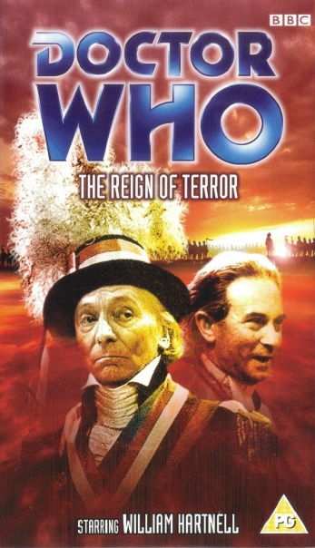
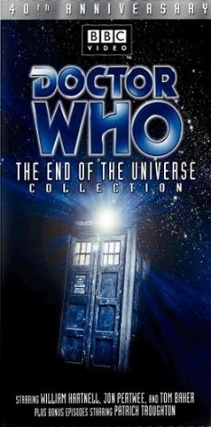
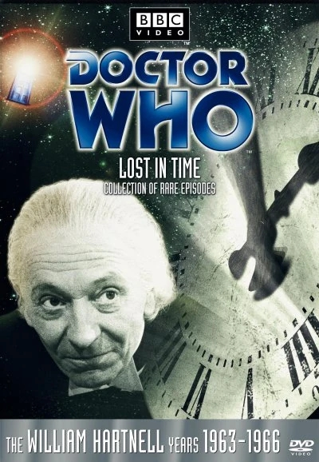
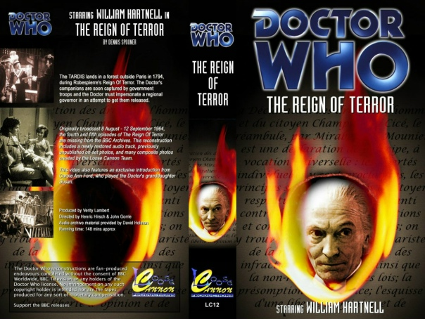
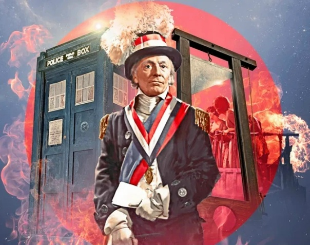

Эра Первого Доктора (1 сезон)
<<< НАЗАД ||| 8. Господство террора ||| ДАЛЬШЕ >>>
+ Реконструкция (эпизоды 4-5) LCRecon Субтитры: отсутствуют |  |
|---|---|
+ Черно-белая анимация (эпизоды 4-5) Субтитры: Русские и Английские | |
+ Фанатская AI-реконструкция (эпизоды 4, 5) Йен Ливайн Субтитры: отсутствуют | |
8 августа - 12 сентября 1964
6 эпизодов по 25 мин.
| 1. Земля страха 2. Гости мадам Гильотины 3. Изменение личности | Найдены в 1985 году - 16mm t/r |
|---|---|
| 4. Французский тиран 5. Необходимая сделка | Утеряны * Имеется реконструкция и анимация |
| 6. Пленники Консьержери | Найден в 1982 году - 16mm t/r |
 |  |  |
«Господство террора» переносит команду в эпоху Французской революции — ТАРДИС оказывается в центре политического хаоса и массовых репрессий. Герои разделяются, попадают под подозрение и сталкиваются с реальной угрозой гильотины. Доктор действует хитростью: маскируется, ведёт тонкую игру с властями и пытается спасти спутников, не меняя ход истории. Серия мощно раскрывает тему страха как инструмента власти и показывает Доктора как мастера дипломатии и импровизации.
  VHS + бокс-сет - ноябрь 2003 |  DVD бокс-сет - 1 ноября 2004 |
|---|---|
 Реконструкция от Loose Cannon * Версия в нашей группе | DVD (с анимацией) - 28 января 2013 * Версия в нашей группе |


